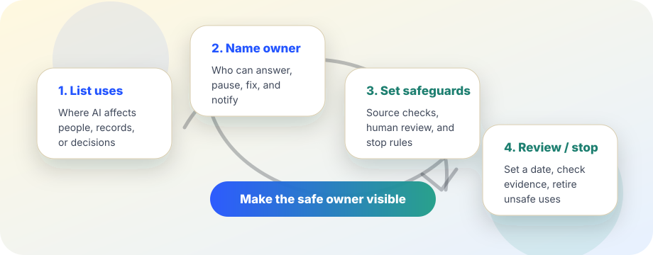

Practical AI governance
AI risk register starter: one page to keep AI uses visible.
Use this when a school, workplace, nonprofit, agency, or small team has several AI tools in use but no shared view of who owns them, what could go wrong, and when to stop or review them.
The short answer
An AI risk register is a living list of AI uses, owners, risks, safeguards, review dates, and stop rules. It should be short enough to maintain and clear enough that a non-technical leader can ask: What are we using, who is responsible, what could harm people, and what would make us pause?
NIST’s AI Risk Management Framework organizes AI risk work around governing, mapping, measuring, and managing risks. ISO/IEC 42001 describes an AI management system as a way for organizations to manage AI responsibly. A small register does not replace those frameworks, but it gives everyday teams a practical starting artifact: a visible inventory tied to ownership and review.

When to create a register
Create a simple register when any AI tool or feature is used for more than a one-off private experiment, especially if it touches people, records, services, money, grading, hiring, health, safety, legal position, public communication, or operational decisions.
Definitely track
- AI summaries copied into official records.
- Chatbots or assistants that answer public, student, patient, client, or employee questions.
- Classification, prioritization, scoring, routing, screening, or recommendation tools.
- Generative AI used for policy, legal, medical, financial, safety, or public-facing claims.
Usually skip
- One-time brainstorming that never leaves a private draft.
- Low-stakes formatting help where a human checks the final content.
- Experiments that use no sensitive data and affect no person, record, or decision.
Starter register template
Copy this into a spreadsheet, document, issue tracker, or wiki. Keep the first version small; a maintained six-column register beats an abandoned thirty-column register.
| AI use | Owner | People / records affected | Main risk to check | Safeguard or review | Next review / stop rule |
|---|---|---|---|---|---|
| AI meeting summary for project meetings | Operations lead | Staff action items and internal records | Wrong owner, missed commitment, sensitive detail copied too broadly | Human chair reviews summary before it becomes the record | Review monthly; stop if summaries are copied without review |
| Public website chatbot draft | Communications manager | Residents, students, customers, or public readers | False policy, eligibility, deadline, or service information | Approved answer library, source links, escalation to human contact | Review before launch and after content changes; stop if unsupported claims appear |
| AI-assisted vendor proposal review | Procurement owner | Bidders, budget decisions, evaluation notes | Unfair scoring, hidden criteria, unsupported comparisons | AI output is advisory only; evaluators document source evidence | Review each procurement; stop if AI ranking substitutes for human evaluation |
What each column is for
- AI use: describe the actual workflow, not the vendor slogan. “Summarizes parent emails” is clearer than “productivity AI.”
- Owner: name the role that can pause, fix, notify, or retire the use. Avoid “everyone.”
- People / records affected: list who or what could be changed, classified, contacted, excluded, delayed, misinformed, or recorded.
- Main risk to check: write the failure mode in ordinary language: false facts, privacy exposure, unfair treatment, unsafe advice, missing context, inaccessible output, or overreliance.
- Safeguard or review: name the concrete control: source check, human approval, test set, access limit, disclosure, appeal path, logging, vendor evidence, or stop rule.
- Next review / stop rule: choose a date and a condition that would make the team pause or retire the use.
A maintenance rhythm that does not become theater
- Before launch: add the use, owner, affected people or records, likely risks, safeguards, and first review date.
- After incidents or near misses: update the risk and safeguard, then link to the incident note or correction record.
- Monthly or quarterly: remove retired tools, check whether safeguards still happen, and move high-stakes uses into a fuller risk process.
- When ownership changes: update the owner immediately. An ownerless AI use is a warning sign.
If the register is never used to pause, improve, or retire anything, it has become decoration. Make it smaller or tie it to real review decisions.
When a simple register is not enough
Use the starter register as a doorway, not a substitute, for deeper review. Escalate when an AI use affects rights, benefits, access to public services, education, employment, housing, health, safety, credit, legal status, or other consequential decisions.
- Ask for vendor documentation and evidence before adoption.
- Define human appeal or correction paths for affected people.
- Measure performance on relevant groups and contexts, not just demos.
- Check privacy, security, accessibility, procurement, labor, and legal requirements with qualified reviewers.
- Publish plain-language notices where people need to know AI is involved.
A good register makes escalation easier because the team can see which AI uses are low-stakes, which need review, and which should stop.
Sources and further reading
- NIST — AI Risk Management Framework
- NIST AI 100-1 — Artificial Intelligence Risk Management Framework
- ISO — ISO/IEC 42001 Artificial intelligence management system overview
- European Commission High-Level Expert Group — Ethics Guidelines for Trustworthy AI
This guide is educational and operational, not legal, procurement, cybersecurity, or compliance advice. For regulated or high-stakes AI uses, involve qualified reviewers and follow the applicable law, policy, contract, and incident process.